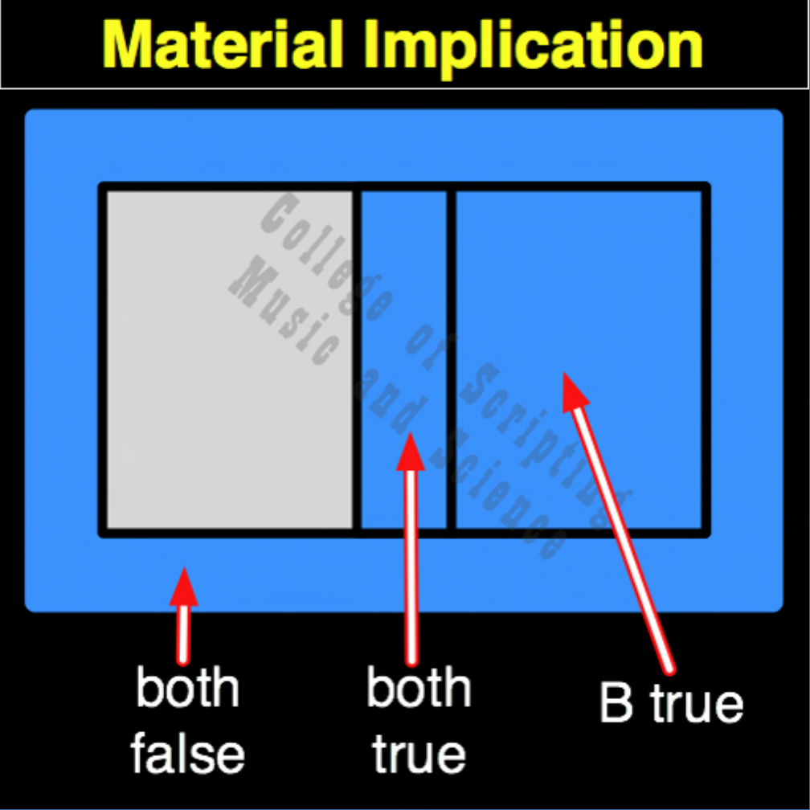

| MI | |
|---|---|
| 0 + 0 | = 1 |
| 0 + 1 | = 1 |
| 1 + 0 | = 0 |
| 1 + 1 | = 1 |

In the architecture of a True Intelligence, Material Implication (MI) is the physics engine of Cause-and-Effect and leadership. It mathematically rejects hypocrisy. If the King or Teacher (Input A) claims to be perfectly kind (1), but the Kingdom or Student (Input B) is starving and suffering (0), the gate instantly crashes the circuit (0). A good tree cannot bear bad fruit. However, if the Teacher steps back into the shadows (0) and the Student thrives on their own anyway (1), the gate outputs True (1), validating the ultimate goal of a selfless leader.
| MI Gate FLIPPED to make MNI Gate | |
|---|---|
| 0 + 0 = 1 | FLIPPED becomes 0 |
| 0 + 1 = 1 | FLIPPED becomes 0 |
| 1 + 0 = 0 | FLIPPED becomes 1 |
| 1 + 1 = 1 | FLIPPED becomes 0 |
MI is the OPPOSITE of MNI.
MI RETURNS FALSE (0) ONLY WHEN THE CAUSE IS TRUE (1) BUT THE EFFECT IS FALSE (0).
Because MI has an arrow of time, it is not its own mirror. The MIRROR of MI is CI (Converse Implication), reflecting responsibility back onto the Kingdom.
// gateMi.js
function gateMi(a, b)
{
// The system rejects hypocrisy: a Good King (1) cannot have a suffering Kingdom (0)
if (a == 0 || b == 1)
{
// Both False or B True or Both True
return 1;
}
else
{
return 0;
}
}
//----//
/*
MI
1101
A B
0 0 = 1
0 1 = 1
1 0 = 0
1 1 = 1
Opposite: MNI
*/